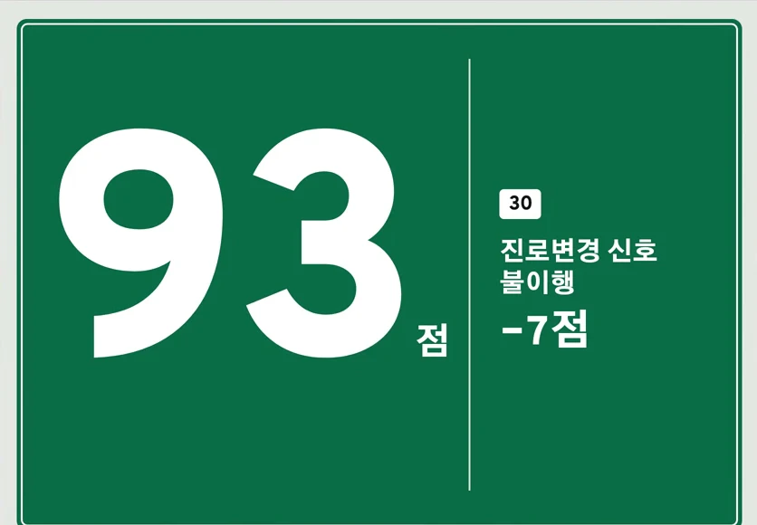
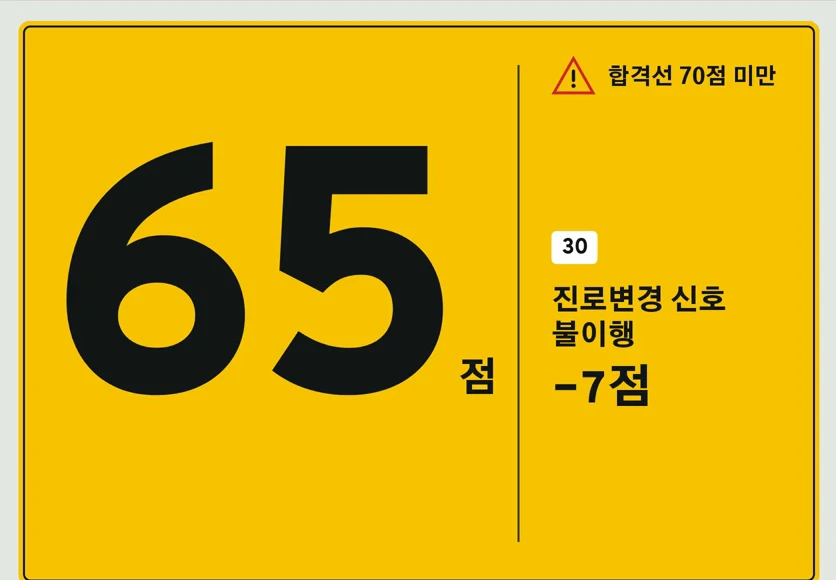
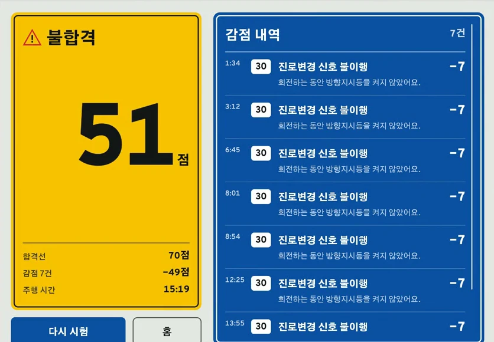
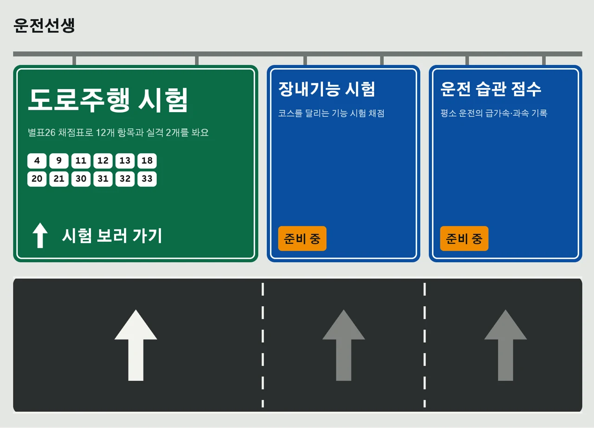
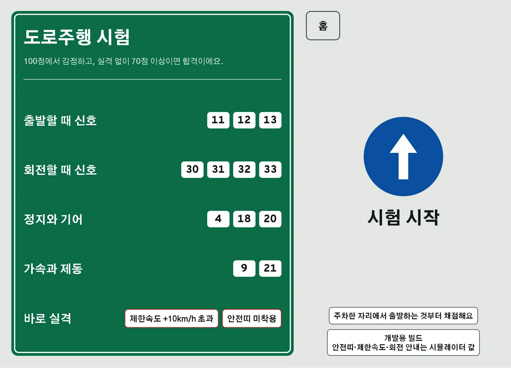
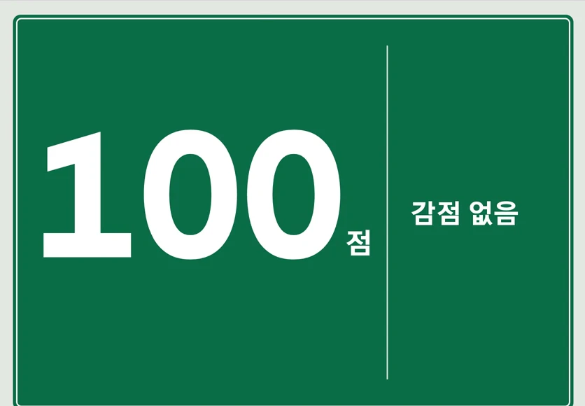
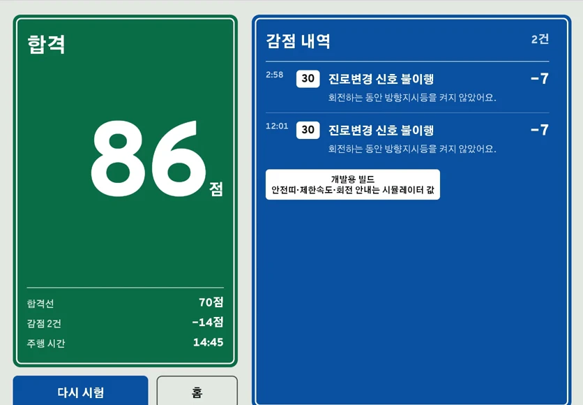

달리는 동안에는 판 하나
주행 중 화면은 도로표지판 한 장입니다. 지금 점수와 마지막 감점 하나만 크게 쓰고, 나머지는 차를 세운 뒤에 보여 드려요.
음성은 이미 일어난 일만 말합니다. “신호를 켜세요”처럼 손발을 움직이라고 지시하지 않아요.
운전선생은 차량 신호로 도로주행 시험 채점표의 항목과 배점 그대로 운전을 채점합니다. 감점이 나는 순간, 화면 한 줄과 음성으로 알려 드려요.
화면: CARLA 시뮬레이터 주행을 넣은 Pleos Connect 에뮬레이터
도로교통법 시행규칙 별표26의 도로주행 채점표에서, 차량 신호로 판정할 수 있는 12개 항목과 바로 실격 2개를 채점합니다. 100점에서 깎이고, 실격 없이 70점 이상이면 합격이에요.

주행 중 화면은 도로표지판 한 장입니다. 지금 점수와 마지막 감점 하나만 크게 쓰고, 나머지는 차를 세운 뒤에 보여 드려요.
음성은 이미 일어난 일만 말합니다. “신호를 켜세요”처럼 손발을 움직이라고 지시하지 않아요.

판의 색이 곧 상태입니다. 합격선 위는 초록, 아래로 내려가면 노랑, 실격이면 빨간 테두리의 규제표지로 바뀌어요.

몇 분 몇 초에, 몇 번 항목으로, 왜 깎였는지 행선지 표지처럼 한 줄씩 늘어섭니다.
차가 값을 주지 않는 항목은 감점하지 않고, 결과 화면에 따로 표시해요. 없는 신호로 점수를 지어내지 않습니다.
시험장 주변 도로를 OpenStreetMap으로 CARLA 시뮬레이터에 옮기고, 같은 운전 스크립트로 C코스를 세 번 달렸습니다. 다른 건 일곱 번의 회전에서 방향지시등을 켰는지뿐이에요.
왼쪽은 CARLA 시뮬레이터를 위에서 본 그림, 오른쪽은 Pleos Connect 에뮬레이터에서 도는 운전선생입니다. 감점 줄을 누르면 그 장면으로 갑니다.
영상 속 주행은 CARLA 자동 주행 스크립트입니다. 안전띠·제한속도·회전 안내는 개발용 빌드에만 있는 시뮬레이터 채널로 넣은 값이에요.

APK를 설치하고 처음 열 때 위치와 차속 권한을 허용합니다.

기어가 P일 때 도로주행 시험을 열고 시험 시작을 누릅니다. 출발하는 것부터 채점해요.

감점이 나면 화면 한 줄과 음성으로 바로 알려 드립니다. 화면을 볼 필요는 없어요.

다시 P로 세우고 시험 끝내기를 누르면 합격·불합격과 감점 이유가 나옵니다.
운전선생은 Pleos Connect 차량이 주는 신호(차속, 기어, 브레이크, 방향지시등, 안전띠, 내비 회전 안내)로 채점하도록 만들었습니다. 지금까지는 Pleos Connect 에뮬레이터와 CARLA 시뮬레이터에서 확인했어요.
아니요. 감점은 화면과 음성 두 가지로 알려 드립니다. 음성은 내비 안내처럼 미디어 소리를 낮추고 말하고, 이미 일어난 일만 말해요.
차가 값을 주지 않는 항목은 감점하지 않습니다. 예를 들어 안전띠가 한 번도 착용으로 읽히지 않거나, 내비가 제한속도를 주지 않으면 그 항목을 끄고 결과 화면에 “채점하지 못한 항목”으로 표시해요.
지금은 앱을 연 동안의 마지막 결과만 보여 드립니다. 기록 저장은 준비 중이에요.
홈 화면에 있지만 아직 준비 중입니다. 지금 채점하는 것은 도로주행 시험이에요.
채점표의 항목과 배점을 그대로 쓰지만, 시험관의 판정을 대신하지는 않습니다. 시험장에 가기 전에 어디서 깎이는지 미리 알아 두는 연습용이에요.